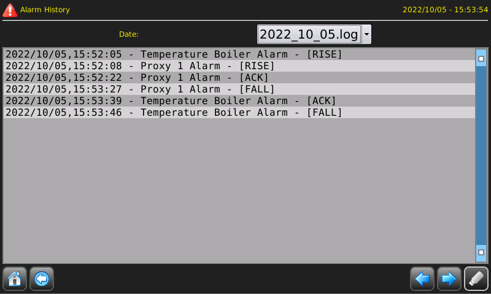

Um die Seite mit der Alarmhistorie anzuzeigen, können Sie eine ATCMbutton verwenden und das Wort “alarms_history” in die Eigenschaft “pageName” eingeben. Siehen Sie Kapitel “Bibliotheks-Seiten”.
Auf dieser Seite werden alle zuvor aufgetretenen Alarme angezeigt:

Definition von RISE, ACK und FALL:
RISE: Alarmsignal.
ACK: Quittierung des Alarms durch den Bediener.
FALL: Alarm zurückgegeben.
Sie können sie über das Dropdown-Menü nach Tag filtern. Sie können die Daten auch auf den USB-Stick
herunterladen, indem Sie die Taste
 drücken, die beim Einstecken eines USB-Sticks aktiviert wird.
drücken, die beim Einstecken eines USB-Sticks aktiviert wird.